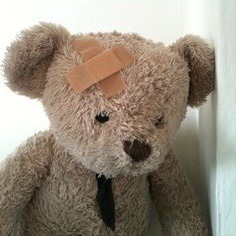

Exercise
Goals:
Will this be the year I start exercising? Maybe.
I have no excuse now with a gym membership included in university tuition.
I am lazy.. but I will try by best.
＋
Simple exercises:
1. Walking
I do this all the time already :P
2. Cycling
In mtl I would Bixi so much, but maybe now I will buy a bike? is that crazy?
Sometimes I bike to campus but it's not a far distance.
3. Yoga
hot yoga ^_^ makes it more appealing
teaches mindfulness + burns calories <3
4. Squats, Squat jump, Glute bridge
5. Lunges, Pulse lunges, Side lunges
6. Push-ups / Planks / Mountain Climbers, Sit-ups
strong stomach >:) also flexing abs throughout the day so that it's the natural position.
That's what mama always said to do.
7. Boxing: I really want to get into boxing as my sport. I currently watched 100 yen love, and it
has inspired me. Boxing will get me to exercise with a purpose (self-defense) while looking
cute <3 The shoes are so dreamy
Mental
There are lot's of things to unpack within the mind, but I will try my best to characterize them
＋
Self Love:
One of my biggest hurdles. Not that I hate myself, I just cringe at the idea of "self love". I know it's
important but can't help but feel as though it is too narcissistic to play out.
Anyway, I'm trying to get past some insecurities, so sorry if this section is a little #cringe
Insecurities and how to work through them:
- Intelligence
Intelligence has many factors: academic, emotional, interpersonal, etc. It's not that
you don't have these traits, it's that you are not confident enough in them. Being confident isn't easy, so
take baby steps.
- Looks
Looks are subjective, so just try to be your realistic best self. Find beauty in your differences.
Try to maintain routine and stay healthy, as this reflects on your looks the most. Drink water!
Eat consistently, sleep well, don't stress too much. Other than that, you can only hide your problems without
actually fixing them.
- Body
It's hard not to fall into old, unhealthy habits. Remember, these are also band-aid solutions.
Starving yourself leads to your body overusing the calories that it does receive, meaning the weight
loss is unsustainable. Especially when you substitute real food for snacks. It also leads to a plethora
of other health issues! So instead, eat regularly and exercise. Your body needs the nutrients.
- Comparisons
It's well known that negatively comparing yourself to others is harmful.
There will always be someone who you deem better than yourself. Although comparisons are inevitable, they can be
flipped in a positive light. Borrow the traits you like on others and try to apply them to yourself
in a way which is genuine to yourself. Do not try to copy them, as this is too inauthentic. Be happy
that there are people you can learn from around you, and be proud of them for achieving something
that you aspire to have. Humanize the other person and don't forget that they have insecurities of their own.
1. Humanize people you look up to.
2. Learn from them.
3. Apply what you can.